What Was a Pugio?
PugioRoman DaggerWhat Was a PugioRoman ArmyRoman LegionaryJulius Caesar Assassination
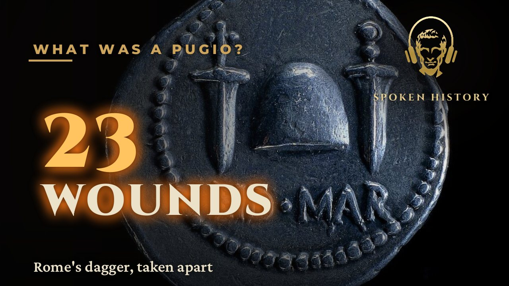
The Ides of March, 44 B.C. In a meeting hall in Rome, a group of senators crowd around Julius Caesar. According to the Roman writer Suetonius, Caesar suddenly sees that daggers have been drawn from every side. So he pulls his toga over his head. And, Suetonius adds, tidies its folds around his legs, so that he will fall decently.
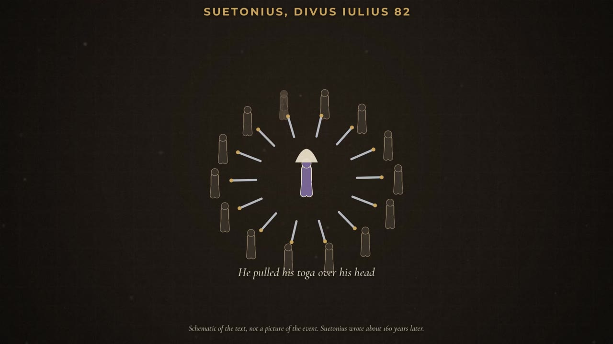
The pugio. The Roman dagger. We've taken apart a scorpion, an onager and a caltrop. This one fits in a hand. And it shows up in some of the most famous scenes in Roman history. Today we're asking what it was, what has been dug up, and what the stories really tell us. Because, once again, the evidence is thinner than the legend.
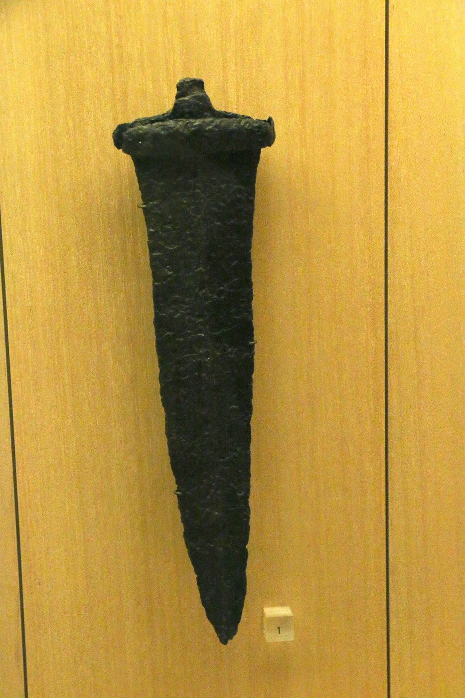
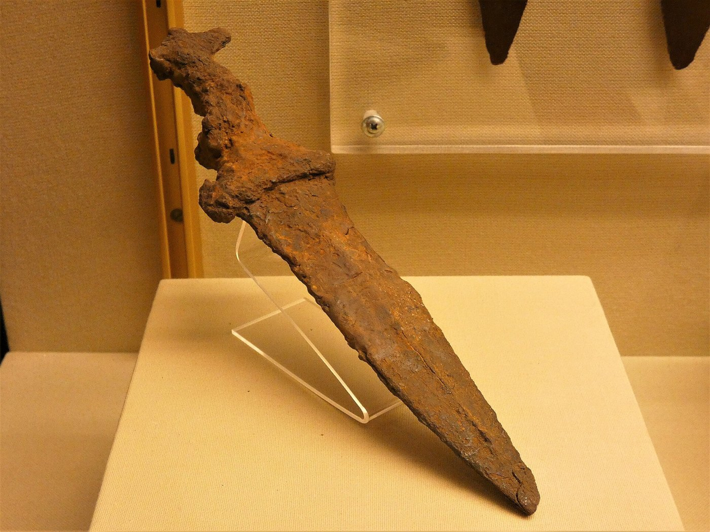
What is a pugio?
So, what is a pugio? A Roman dagger. Short, double-edged, worn on a belt in a sheath that hangs from rings. The Latin word shows up again and again in Roman writers, usually in the hands of people who are about to do something desperate. But we'll start with the objects. They are the part nobody can argue with.
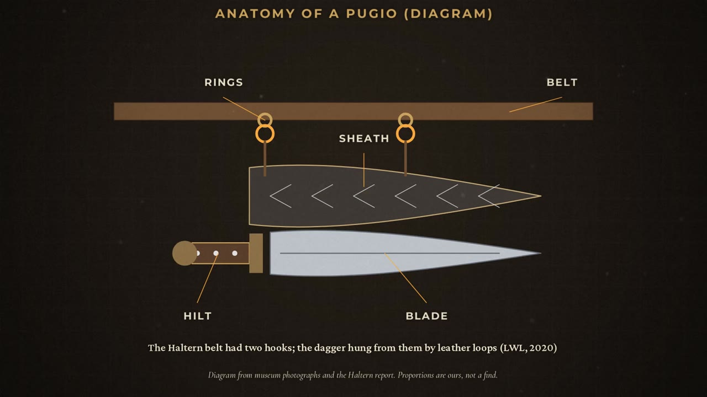
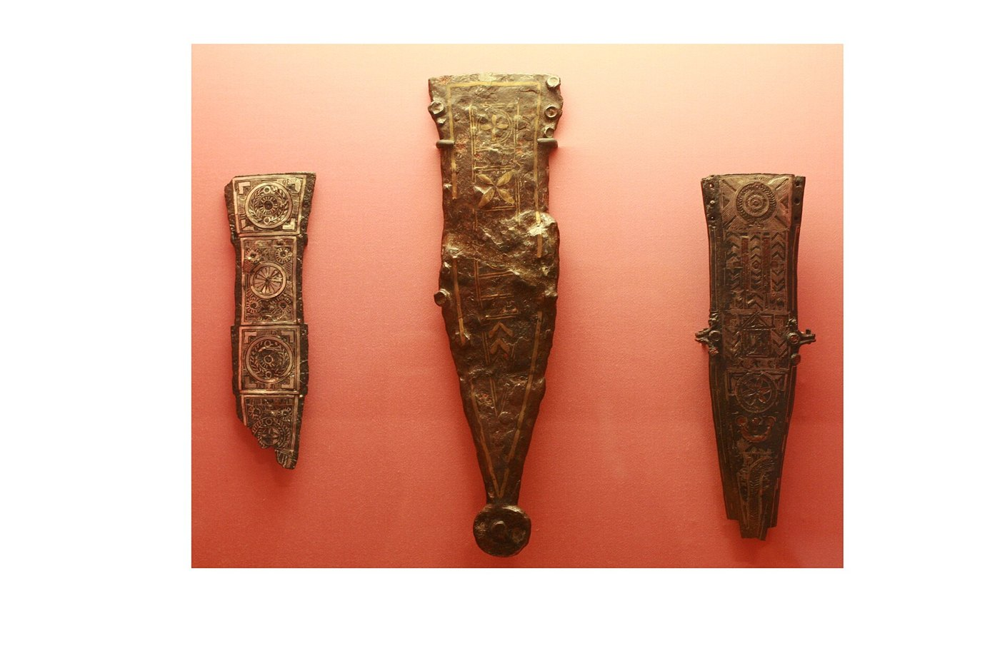
Caesar's killers
Back to the Senate, and Suetonius. He says Caesar was stabbed twenty-three times. He says that when the first blow fell, Caesar grabbed the arm of one attacker, Casca, and ran it through with his writing stylus. Then he saw the drawn daggers all around him, and covered his head. Remember who is telling us. Suetonius wrote about 160 years later. He's reporting what tradition said.
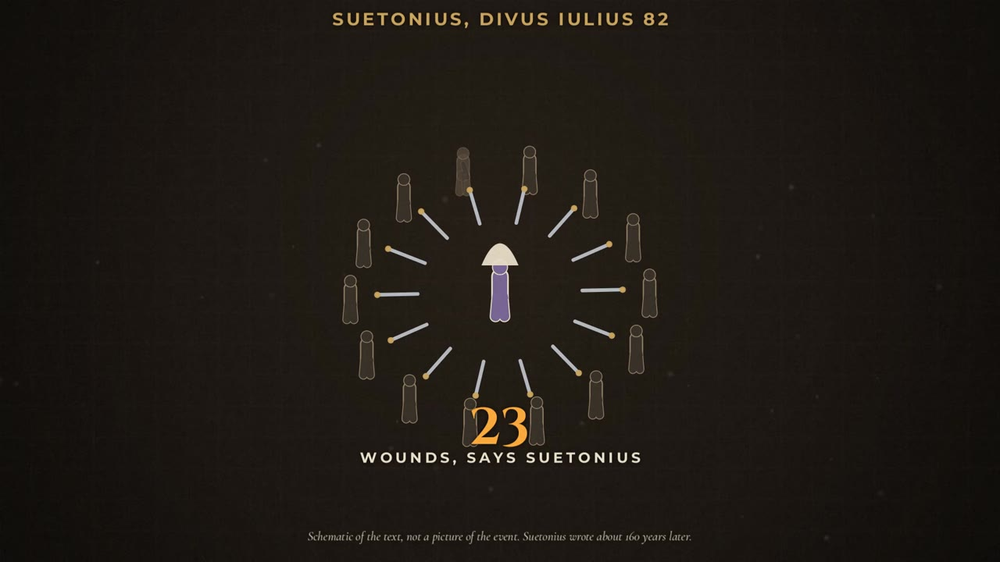
The coin with two daggers
There is one witness from the time. A coin. A silver denarius, struck in 43 or 42 B.C. for Brutus, one of the killers. On one side, his head. On the other, a cap of liberty between two daggers, and the letters EID MAR. The Ides of March. The killers, putting the day on their money. It's a small stamped picture, not a drawing from life. The two daggers are drawn a little differently from each other, and we can't tell how closely the die-cutter copied a real blade.
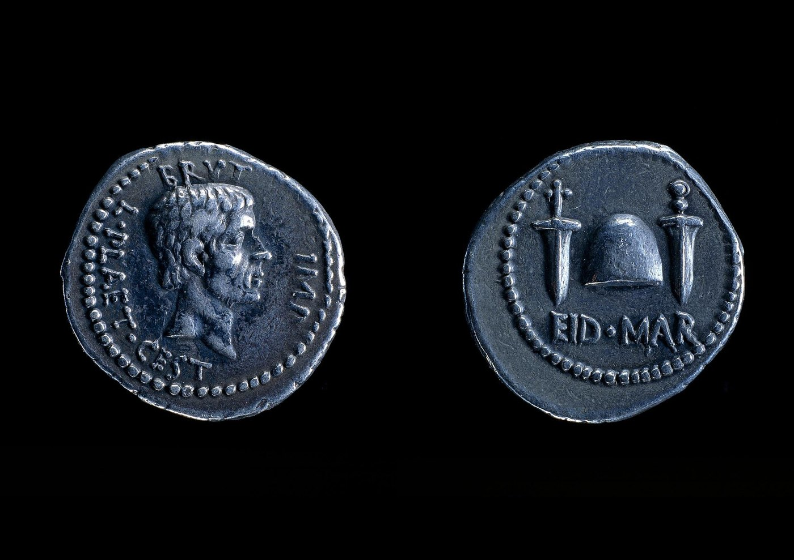
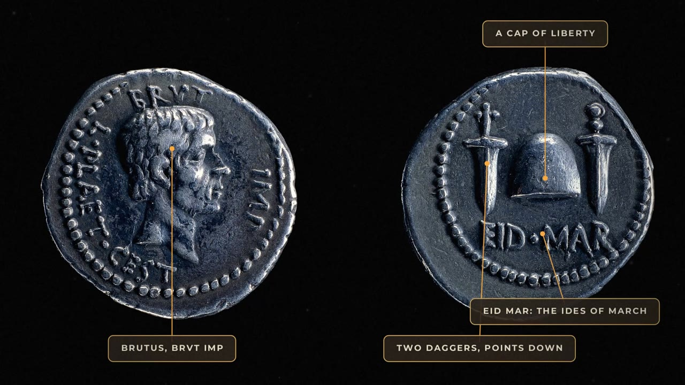
A dagger from a temple: Scaevinus
A second story, from the year 65 A.D. A plot against the emperor Nero. Tacitus tells us that one conspirator, Scaevinus, had taken a dagger down from a temple. The temple of Salus, says Tacitus, or, as others reported, of Fortuna, in a town called Ferentinum. The night before the plot, Scaevinus had his freedman Milichus sharpen it on a stone. The blade, Tacitus says, had gone blunt with age. Milichus went and told Nero's people. The plot collapsed. And Nero dedicated that same dagger on the Capitol, in Rome, with an inscription to Jupiter the Avenger. A dagger kept in a temple, then sharpened, then dedicated again. Tacitus was writing about 50 years after it happened.
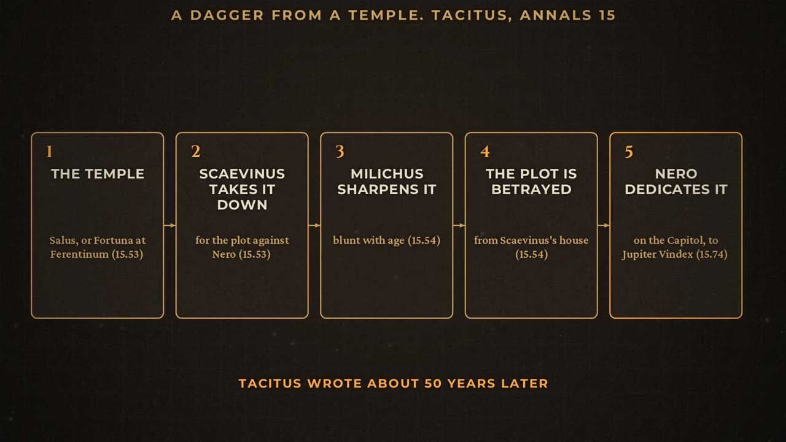
Did you know? In A.D. 65 the conspirator Scaevinus had his freedman sharpen an old dagger from a temple the night before the plot. Tacitus says the freedman, Milichus, went and told Nero's people, and Nero then dedicated that same dagger on the Capitol, with an inscription to Jupiter the Avenger.
Arria: it does not hurt
Third story. Pliny the Younger tells of a woman named Arria. Her husband, Paetus, had backed a failed revolt against the emperor Claudius. Pliny says Arria drew a dagger, stabbed herself in the chest, pulled it out and handed it to her husband, with the words: Paete, non dolet. Paetus, it does not hurt. It's a tale of courage, told by an author who admired it. But look at the pattern. Murder, a plot, a suicide. In all three, the pugio is the thing a Roman reaches for when he has to act at close quarters, in private.
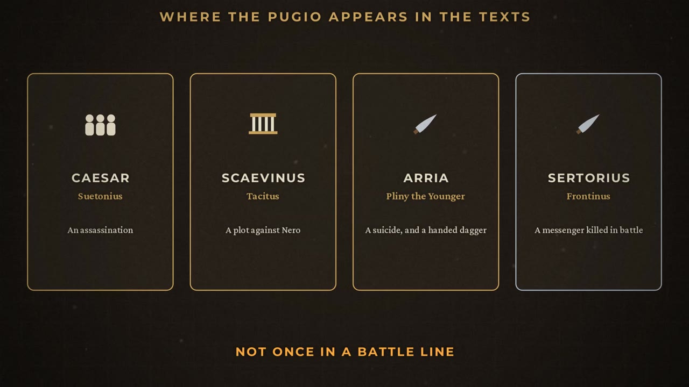
Did you know? Pliny the Younger has Arria stab herself, pull out the dagger and hand it to her husband with the words Paete, non dolet: Paetus, it does not hurt. Pliny himself says it was a tale of courage.
A general and a messenger
One more, and this one is a general. Frontinus collected military tricks. In one, Sertorius, commanding in Spain, is in the middle of a battle when a messenger arrives with news that his officer Hirtuleius is dead. Sertorius runs the man through with a pugio, so the news won't spread and shake his men. It's the only use of the dagger on a battlefield we found in the texts we read. And even here, it's not used against an enemy.
Did you know? In Frontinus' collection of military tricks, Sertorius runs a messenger through with a pugio in the middle of a battle, so that the news of an officer's death will not spread and shake his men.
What museums hold
Now the finds. Pugiones have been dug up across the Roman world. Museums hold them from Spain, from Mainz on the Rhine, from the fort at Oberstimm in Bavaria, from Carnuntum and Stillfried in Austria. The ones in these photographs run from the time of Augustus to about the year 200. In Spain and Portugal alone, one study counts 57 daggers from the Roman army, from the end of the first century B.C. to the third century A.D. Some are plain. Some are anything but.
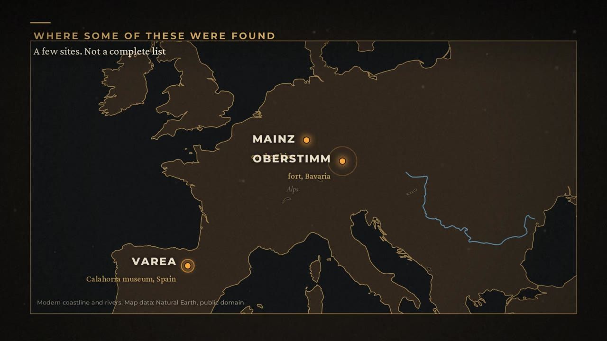
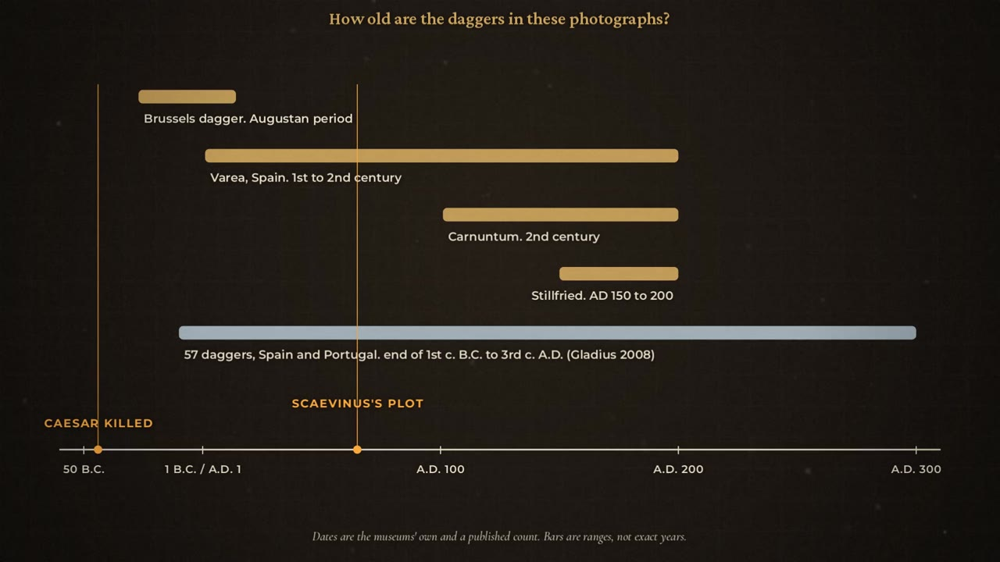
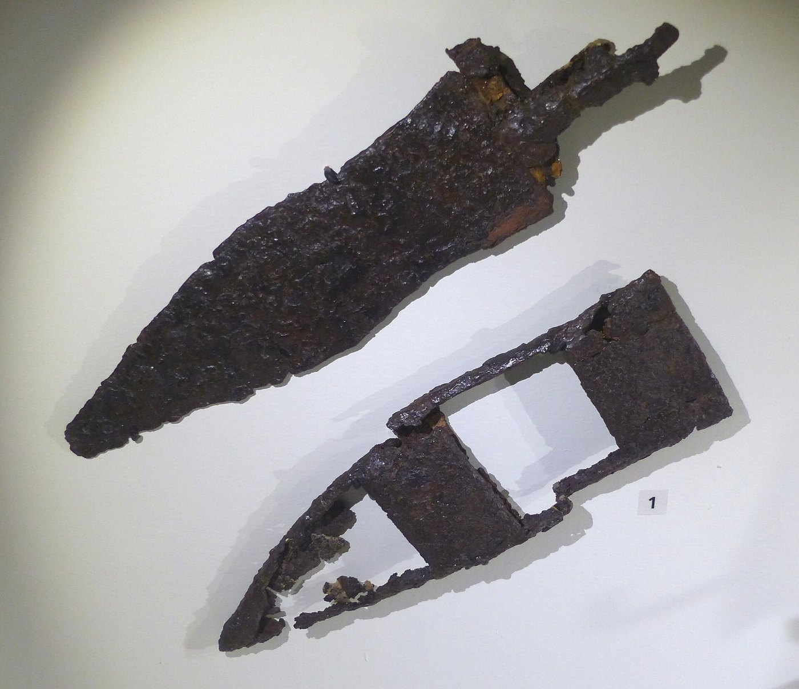
The dagger from Haltern, 2019
In spring 2019, archaeologists digging in a Roman burial ground at Haltern, in Germany, found a dagger. It was still in its sheath, and so was the belt it hung from. Heavy corrosion hid all of it, until X-rays and scans showed what was inside. The front of the sheath and the hilt are decorated with lines of silver wire laid into iron. The thinnest strips are no more than a fifth of a millimetre thick. There is red enamel, and red glass. The excavators' own press release says that in Europe there is no other combination of dagger, sheath and belt so well preserved. And the scans showed the blade was forged from different steels, welded together in the fire. It lay not in a grave, but in the backfill of a ditch around a burial mound, and the excavators say how it got there is not clear. A chance loss seems unlikely to them. One idea, which they call pure speculation, is that it was laid down in memory of a comrade.
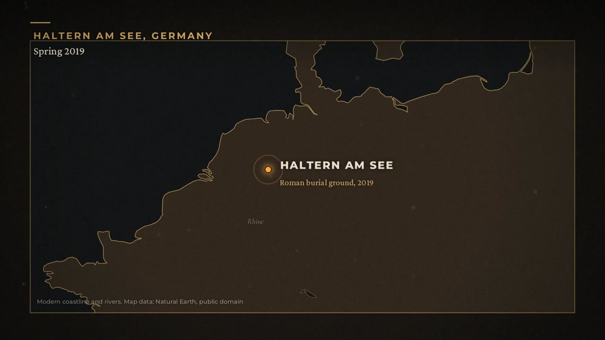
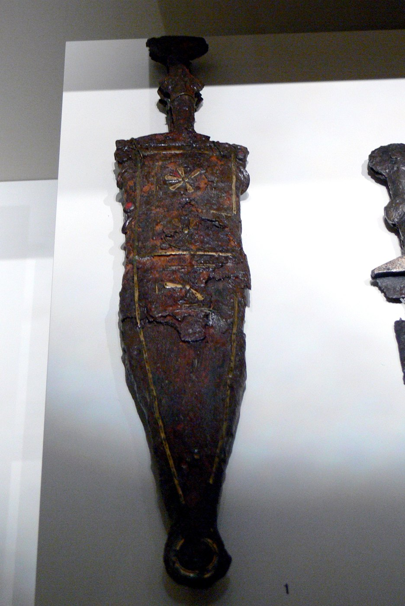
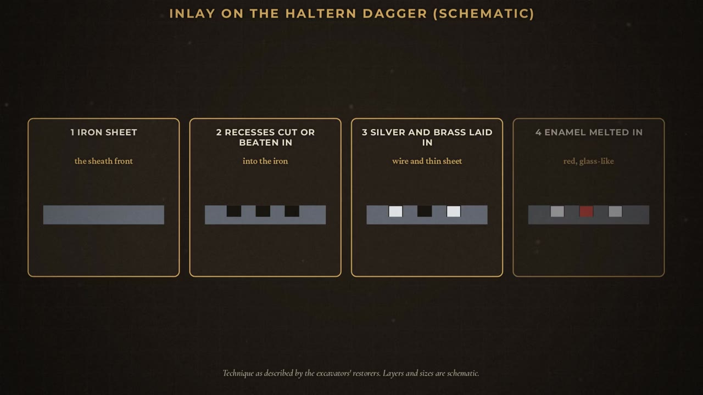
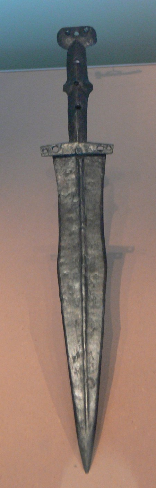
Source for the Haltern find: the press release of the Westfalen-Lippe Landscape Association (LWL), 12 February 2020.
Where did it come from? A dispute
So where did the pugio come from? You'll often read that it came from Spain, from the daggers of the Iberian peoples. We haven't confirmed that in the scholarship we read, and we're not going to repeat it as fact. What we can say is this. The Spanish study of the daggers found in Spain and Portugal finds that the Roman army's daggers there did not simply match those on the Rhine and Danube frontier. It notes that the first century there has no precedent, and no continuation. That's an honest puzzle. And it means the origin is an open question.
Did soldiers fight with it?
Did soldiers fight with it? Here the evidence runs thin. One report says the Haltern dagger shows signs of wear, which would suggest it was carried and used. But used for what? We don't know. The texts we read show it in assassination, in plots, in suicide. Not once in a battle line. How it was worn, who carried one, and how it was used in a fight: we don't know. That's what the evidence allows.
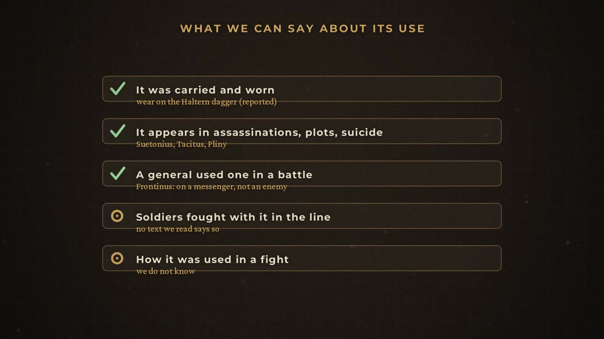
What we really have
So, what do we really have? Real daggers, from many provinces, across about two centuries. Some with silver, enamel and glass. Texts where the pugio is the weapon of an assassin, a conspirator, a desperate wife and a worried general. And a coin, with two of them. What we don't have: a Roman text that says how soldiers fought with it, or an agreed answer on where it came from.
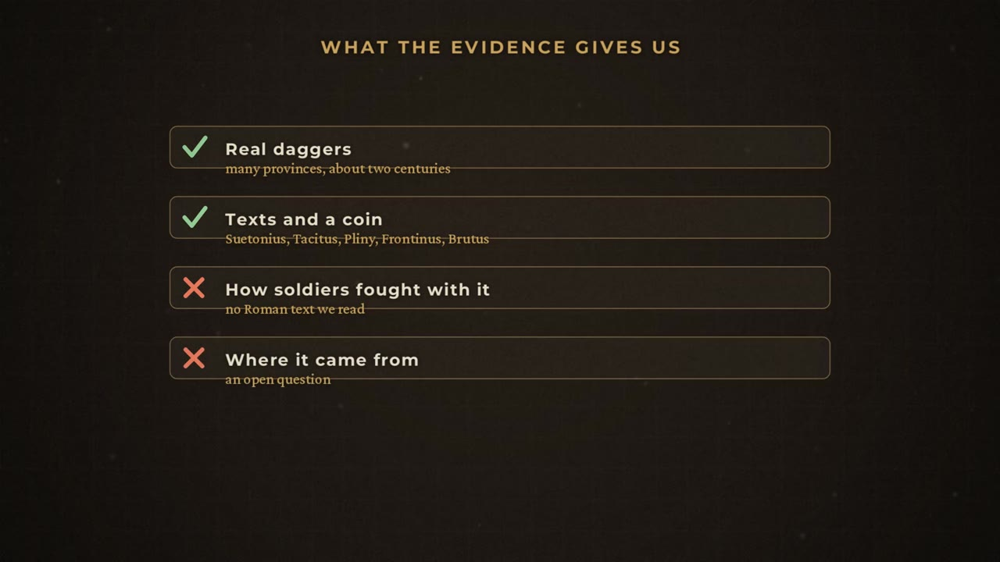
Verdict, and what comes next
So that's the pugio. A small blade, with a big shadow. Most of what we think we know about it comes from stories, and those stories are not about battle.
Over to you
Why would a legionary's dagger end up in a burial ground at Haltern? What next after the pugio: the gladius or the segmented armour?
Prefer to watch? The video on YouTube covers the same story with the full animations. Jump to a part:
- 0:00 The Ides of March, 44 B.C.
- 0:57 What is a pugio?
- 1:20 Caesar's killers
- 1:48 The coin with two daggers
- 2:29 A dagger from a temple: Scaevinus
- 3:19 Arria: it does not hurt
- 3:58 A general and a messenger
- 4:27 What museums hold
- 5:01 The dagger from Haltern, 2019
- 6:03 Where did it come from? A dispute
- 6:39 Did soldiers fight with it?
- 7:08 What we really have
- 7:34 Verdict, and what comes next
Quick answers
What was a pugio?
The Roman short dagger. In the texts we read it appears in the stories of Caesar's assassination, the plot of Scaevinus against Nero, Arria's suicide and a general killing a messenger, and not once in a battle line.
Is there a coin with daggers from Caesar's assassination?
Yes. A silver denarius struck in 43 or 42 B.C. for Brutus shows a cap of liberty between two daggers and the letters EID MAR. How close the stamped daggers are to real blades, we cannot tell.
Where did the pugio come from?
That is disputed. A popular account says Iberian daggers, but a 2008 study of 57 daggers from Spain and Portugal found that the first century has no precedents and no continuity. The origin is an open question.
What was found at Haltern in 2019?
A dagger with its sheath and belt, with silver wire inlaid in iron, red enamel and red glass. It lay not in a grave but in the backfill of a ditch around a burial mound, and the excavators say how it got there is not clear.
Did Roman soldiers fight with the pugio?
We do not know. No Roman text we read shows soldiers fighting in the line with it. One report says the Haltern dagger shows signs of wear, which suggests it was carried and used, but for what we do not know.
Where it happened
- Rome (44 B.C.): The assassination of Julius Caesar, 15 March 44 B.C., as told by Suetonius.
- Haltern am See, Germany (A.D. 2019): An ornate dagger and its belt found in spring 2019 in the backfill of a ditch at the Roman burial ground.
- Mainz, Germany (A.D. 1): An inlaid pugio sheath from Mainz, shown for comparison.
- Varea (Calahorra), Spain (A.D. 1): A pugio of the 1st or 2nd century A.D. in the museum at Calahorra.
Sources
Ancient writers and modern work
Read directly (Latin text from thelatinlibrary.com, translations ours):
More sources
Image credits
- Roman pugio with sheath, 2nd century. Museum Carnuntum. Photo: Matthias Kabel, CC BY 2.5
- Pugio. Musee d'Archeologie nationale, Saint-Germain-en-Laye. Photo: Cangadoba, CC BY-SA 4.0
- Roman pugio and scabbard, Augustan period. Musee du Cinquantenaire, Brussels. Photo: Michel wal, CC BY-SA 3.0
- Pugio from Varea, 1st-2nd century A.D. Museo de la Romanizacion, Calahorra. Photo: Artistosteles, CC BY-SA 4.0
- Sheaths of Roman pugiones, 2nd century. Museum Carnuntum. Photo: Matthias Kabel, CC BY 2.5
- Denarius of Brutus, EID MAR, 43/42 B.C. British Museum. Photo: British Museum, CC BY-SA 4.0
- Roman dagger, A.D. 150-200, from the fort at Stillfried. MAMUZ, Asparn an der Zaya. Photo: Wolfgang Sauber, CC BY-SA 4.0
- Roman military dagger from the fort at Oberstimm. Celtic Roman Museum Manching. Photo: Wolfgang Sauber, CC BY-SA 3.0
- Roman pugio and sheath with brass and enamel inlay, 1st century A.D., from Mainz. Germanisches Nationalmuseum, Nuremberg. Photo: Wolfgang Sauber, CC BY-SA 3.0
- Animations, maps and diagrams: original work, Spoken History. Map data: Natural Earth, public domain.
Transcript
Read the full narration
What Was a Pugio?. Rome's dagger, and the stories told about it. The Ides of March, 44 B.C. In a meeting hall in Rome, a group of senators crowd around Julius Caesar. According to the Roman writer Suetonius, Caesar suddenly sees that daggers have been drawn from every side. So he pulls his toga over his head. And, Suetonius adds, tidies its folds around his legs, so that he will fall decently. The pugio. The Roman dagger. We've taken apart a scorpion, an onager and a caltrop. This one fits in a hand. And it shows up in some of the most famous scenes in Roman history. Today we're asking what it was, what has been dug up, and what the stories really tell us. Because, once again, the evidence is thinner than the legend. So, what is a pugio? A Roman dagger. Short, double-edged, worn on a belt in a sheath that hangs from rings. The Latin word shows up again and again in Roman writers, usually in the hands of people who are about to do something desperate. But we'll start with the objects. They are the part nobody can argue with. Back to the Senate, and Suetonius. He says Caesar was stabbed twenty-three times. He says that when the first blow fell, Caesar grabbed the arm of one attacker, Casca, and ran it through with his writing stylus. Then he saw the drawn daggers all around him, and covered his head. Remember who is telling us. Suetonius wrote about 160 years later. He's reporting what tradition said. There is one witness from the time. A coin. A silver denarius, struck in 43 or 42 B.C. for Brutus, one of the killers. On one side, his head. On the other, a cap of liberty between two daggers, and the letters EID MAR. The Ides of March. The killers, putting the day on their money. It's a small stamped picture, not a drawing from life. The two daggers are drawn a little differently from each other, and we can't tell how closely the die-cutter copied a real blade. If you are enjoying this type of content, please don't forget to subscribe. A second story, from the year 65 A.D. A plot against the emperor Nero. Tacitus tells us that one conspirator, Scaevinus, had taken a dagger down from a temple. The temple of Salus, says Tacitus, or, as others reported, of Fortuna, in a town called Ferentinum. The night before the plot, Scaevinus had his freedman Milichus sharpen it on a stone. The blade, Tacitus says, had gone blunt with age. Milichus went and told Nero's people. The plot collapsed. And Nero dedicated that same dagger on the Capitol, in Rome, with an inscription to Jupiter the Avenger. A dagger kept in a temple, then sharpened, then dedicated again. Tacitus was writing about 50 years after it happened. Third story. Pliny the Younger tells of a woman named Arria. Her husband, Paetus, had backed a failed revolt against the emperor Claudius. Pliny says Arria drew a dagger, stabbed herself in the chest, pulled it out and handed it to her husband, with the words: Paete, non dolet. Paetus, it does not hurt. It's a tale of courage, told by an author who admired it. But look at the pattern. Murder, a plot, a suicide. In all three, the pugio is the thing a Roman reaches for when he has to act at close quarters, in private. One more, and this one is a general. Frontinus collected military tricks. In one, Sertorius, commanding in Spain, is in the middle of a battle when a messenger arrives with news that his officer Hirtuleius is dead. Sertorius runs the man through with a pugio, so the news won't spread and shake his men. It's the only use of the dagger on a battlefield we found in the texts we read. And even here, it's not used against an enemy. Now the finds. Pugiones have been dug up across the Roman world. Museums hold them from Spain, from Mainz on the Rhine, from the fort at Oberstimm in Bavaria, from Carnuntum and Stillfried in Austria. The ones in these photographs run from the time of Augustus to about the year 200. In Spain and Portugal alone, one study counts 57 daggers from the Roman army, from the end of the first century B.C. to the third century A.D. Some are plain. Some are anything but. In spring 2019, archaeologists digging in a Roman burial ground at Haltern, in Germany, found a dagger. It was still in its sheath, and so was the belt it hung from. Heavy corrosion hid all of it, until X-rays and scans showed what was inside. The front of the sheath and the hilt are decorated with lines of silver wire laid into iron. The thinnest strips are no more than a fifth of a millimetre thick. There is red enamel, and red glass. The excavators' own press release says that in Europe there is no other combination of dagger, sheath and belt so well preserved. And the scans showed the blade was forged from different steels, welded together in the fire. It lay not in a grave, but in the backfill of a ditch around a burial mound, and the excavators say how it got there is not clear. A chance loss seems unlikely to them. One idea, which they call pure speculation, is that it was laid down in memory of a comrade. So where did the pugio come from? You'll often read that it came from Spain, from the daggers of the Iberian peoples. We haven't confirmed that in the scholarship we read, and we're not going to repeat it as fact. What we can say is this. The Spanish study of the daggers found in Spain and Portugal finds that the Roman army's daggers there did not simply match those on the Rhine and Danube frontier. It notes that the first century there has no precedent, and no continuation. That's an honest puzzle. And it means the origin is an open question. Did soldiers fight with it? Here the evidence runs thin. One report says the Haltern dagger shows signs of wear, which would suggest it was carried and used. But used for what? We don't know. The texts we read show it in assassination, in plots, in suicide. Not once in a battle line. How it was worn, who carried one, and how it was used in a fight: we don't know. That's what the evidence allows. So, what do we really have? Real daggers, from many provinces, across about two centuries. Some with silver, enamel and glass. Texts where the pugio is the weapon of an assassin, a conspirator, a desperate wife and a worried general. And a coin, with two of them. What we don't have: a Roman text that says how soldiers fought with it, or an agreed answer on where it came from. So that's the pugio. A small blade, with a big shadow. Most of what we think we know about it comes from stories, and those stories are not about battle. Two questions for you. Why do you think a legionary's dagger ended up in a burial ground at Haltern? And after the pugio, what should I take apart next? The gladius, or the segmented armour? Thanks for watching, and I'll see you in the next one. It's on your screen right now. Tap it, and I'll see you there.
All 17 topics
More episodes

The Roman Scorpion: Rome's Sniper Weapon
A Gaulish warrior on a burning wall is hit by a bolt from a machine he never saw. The Roman scorpion was a torsion bolt-shooter powered by twisted sinew and hair. How it worked, who built...
Read the story
The Roman Onager: Rome's One-Armed Stone-Thrower
A one-armed Roman stone-thrower, named after a wild ass, shook Persian siege towers apart at Amida in A.D. 359. How it worked, how it was crewed and carried, what it really did, and what...
Read the story
What Is a Caltrop?
A few centimetres of iron with four spikes, so shaped that one point always stands up. What the Romans called it, the story of buried caltrops at Gaugamela that only Curtius tells, Vegetius...
Read the story